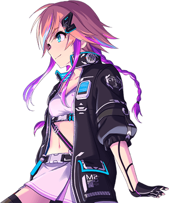
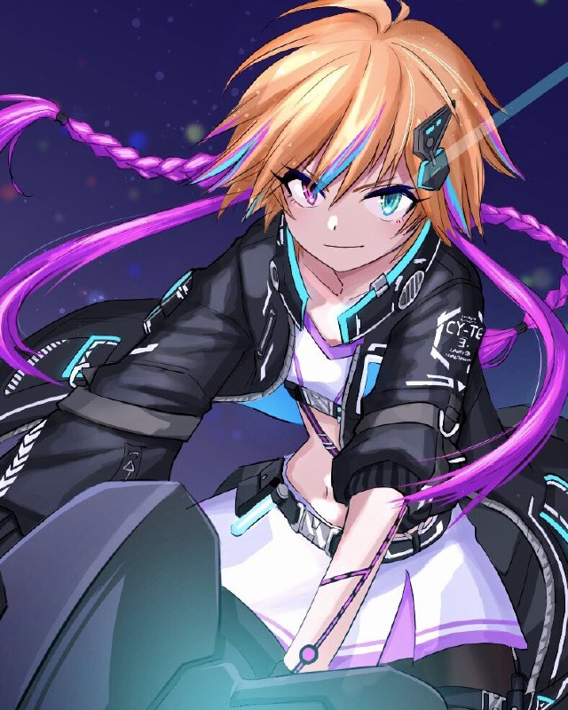
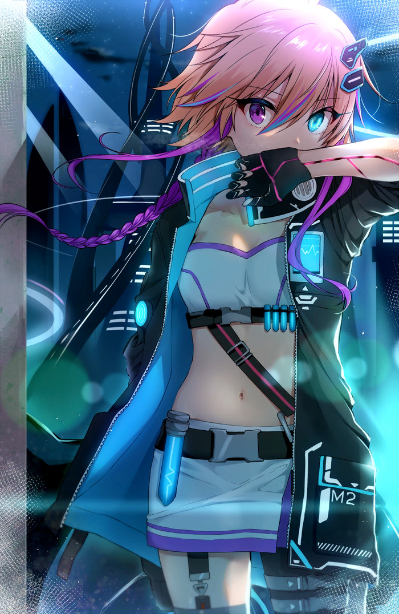
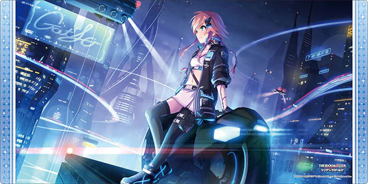

[ ᛖᛊᛏᛖᛚᚨ ᛞᛖᚠᚨ ᚠᚢᚲᚨᚺᚨᚱᚨ ]
ᛖᛊᛏᛖᛚᚨ ᛞᛖᚠᚨ ᚠᚢᚲᚨᚺᚨᚱᚨ (Æstella Deva Fukuhara) is an original character in One Piece: Kaigan. She is a Lunarian, and a former Revolutionary Army member & is an Idol.
Contents
[ hide ]
I. Biography
II. Combat & Stats
III. Media
[ Demographics ]
Name: ᛖᛊᛏᛖᛚᚨ ᛞᛖᚠᚨ ᚠᚢᚲᚨᚺᚨᚱᚨ
Birth name: ᛖᛊᛏᛖᛚᚨ
Age: 20
Gender: ♀
Race: Lunarian
Birthday: February 29th, 1120
Homeland: Elegia
[ Physical Details ]
Height: 3'624'565'737 nm
Weight: 684'219'883'197'183 ng
Blood Type: XF (RH+)
[ Relationships ]
Grandparents: ??? | Age: ??? | Bounty: 𝕭??? | Relation: Grandmother/Grandfather | Status: Deceased | Race: Lunarian
Parents: ??? | Age: ??? | Bounty: 𝕭??? | Relation: Mother/Father | Status: Deceased | Race: Lunarian
Sibling(s): Kokone Fukuhara | Age: 18 | Bounty: 𝕭0 | Relation: Adopted-Sister | Status: Alive | Race: Human
Known Family Member(s): Masao Fukuhara | Age: 78 (at Death) | Bounty: 𝕭0 | Relation: Adopted-Father | Status: Dead | Race: Snow-Bunny Mink
[ Personal Details ]
Kūdere: While in combat, ᛖᛊᛏᛖᛚᚨ can be calm and emotionless while not using her voice. She has a divine-level composure over her vocal cadence and expression.
Energetic: ᛖᛊᛏᛖᛚᚨ has a peppy tone while on stage and tends to let her emotions show during concerts.
A girl with heterochromatic eyes that shimmer a Medium Orchid in her right eye and Cornflower left eye.
Aspiration(s): Spread world peace and host a concert on as many islands as possible.
Likes: Singing, Making People Happy | Dislikes: World Government
Goal:
- Become a World Famous Idol
- Have the entire world watch her concerts free from the World Government's grasp
[ Affiliation ]
Aliases: "Songstress" Estella
Faction: Revolutionary/Pirate
Bounty: 𝕭 0
Alignment: True Good
Occupation: Idol/Songstress | Crew Role: Entertainer
Native Sea: Paradise
Crew Name: Mellow Pirates
Crew Members:
- Alva ~ Captain
- Tigress ~ Vice Captain/Navigator
- ᛖᛊᛏᛖᛚᚨ ᛞᛖᚠᚨ ᚠᚢᚲᚨᚺᚨᚱᚨ ~ Entertainer
- Kokone Fukuhara ~ Entertainer/Cook
- Akira ~ TBD
- Zetsushin Sin ~ TBD
- Rexiama Ragnameil ~ TBD
- Takara Ume ~ Archeologist
[ Backstory ]
𝐂𝐇𝐑𝐎𝐍𝐈𝐂𝐋𝐄𝐒 𝐎𝐅 𝐓𝐇𝐄 𝐒𝐎𝐍𝐆𝐁𝐈𝐑𝐃
Arc I: The Embers of Drum Island
ᛖᛊᛏᛖᛚᚨ believes she was abandoned on Drum Island as an infant, but in reality both of her parents were slaughtered by a Marine Commodore for their lineage when they took ᛖᛊᛏᛖᛚᚨ to the local doctors on Drum Island while passing through. ᛖᛊᛏᛖᛚᚨ's existence was not made public by them except to the doctors of Drum Island. By the time ᛖᛊᛏᛖᛚᚨ would recover, she would have no memory of her family and would assume that the local orphanage was her own family due to not having anybody around that would know her besides the doctors that helped her.
ᛖᛊᛏᛖᛚᚨ was left with what could be a pronunciation guide from her family on how to read and write their own family's own system for secrecy where she ended up growing up to be a dual-linguistic, albeit her speech ends up on the destructive pitches when using it while younger; she does eventually learn to switch tones on a fly; but her writing as a result of secrecy has always been Runic in nature. Masao Fukuhara would as a result be seen as a Father Figure to ᛖᛊᛏᛖᛚᚨ and would know the Lunarian Child as simply "Stella" from when the doctors took her to him.
Arc II: The Resonance of Jaya
Later on, when ᛖᛊᛏᛖᛚᚨ was six years of age, she would often play in the snow around Drum Island while she would sing awfully. One day, while she was waltzing through the island, she would stumble upon a young Kokone right before a Blizzard would end up spurring about and without thinking, ᛖᛊᛏᛖᛚᚨ would bring the young-lass to Masao for care. While the girl was skittish upon waking up next to the flames of the fireplace, ᛖᛊᛏᛖᛚᚨ would be their to welcome her which would most likely terrified the young human girl.
For the next four years, ᛖᛊᛏᛖᛚᚨ would practice her singing, albeit usually while in private until Kokone witnessed her singing first hand as well as the semblance of flame breath while she sung. While finding her sister singing, she would end up getting a minor burn from ᛖᛊᛏᛖᛚᚨ blindly singing thinking she was had privacy enough to not be found. After the incident, Kokone would bring up the talents of both of the two to Masao who would find a way to get the sisters to Jaya for their dreams as a way to cheer ᛖᛊᛏᛖᛚᚨ on and allow both of the sisters to try to make a name for themselves.
While on Jaya, their performances were of a mediocre accord that would cause them to struggle to make money for a bit. The so-called Devil Singer of Jaya grew in popularity along with her masked Sister and were soon to be known around Jaya as the "Fukuhara Twins", despite not looking anything alike. Over the five years of them hosting Concerts, they barely had enough to scrape by until the Revolutionary Army happened to come through and pick the sisters up for a short period of time as "potential new recruits."
Arc III: Revolutionary Overdrive
While spending two years with the Revolutionary Army, ᛖᛊᛏᛖᛚᚨ learned how to wield a scythe in the most basic form to defend herself and as a result, has a custom microphone built into a retractable scythe in the cases that she would ever be attacked while on stage. The Revolutionary Army would also impart the knowledge of how bad the World Government and the Marines truly are on ᛖᛊᛏᛖᛚᚨ which changes the tone of her concerts to be more so about peace and free from the World Government.
Eventually, on ᛖᛊᛏᛖᛚᚨ's effective 18th birthday, the sisters would be taken to Water 7 by the Revolutionary Army with being tasked to return as a proper recruit in the future after they see the world with their own eyes. While ᛖᛊᛏᛖᛚᚨ cannot perfectly control her flames, she has gotten to the point she can manifest constructs of flames using vocal signatures, but still needs the small Sea-prism Stone device from the Revolutionary Army to block her lineage factor from manifesting flames while she sings.
--- END OF RECORDED CHRONICLE ---
[ Trivia ]
ᛖᛊᛏᛖᛚᚨ's Height and Weight through the ages:
| Age |
Height(nanometers) |
Height (ft'in) |
Weight (nanograms) |
Weight (lbs) |
| 6 | 1'512'482'937 nm | 4'11.5" | 66'432'198'412'583 ng | 146.4 lbs |
| 8 | 1'883'612'237 nm | 6'2.1" | 112'564'321'988'483 ng | 248.1 lbs |
| 12 | 2'314'905'237 nm | 7'7.1" | 198'725'116'472'183 ng | 438.1 lbs |
| 15 | 2'764'218'837 nm | 9'.08" | 314'892'335'166'783 ng | 694.2 lbs |
| 17 | 3'128'471'137 nm | 10'3.2" | 448'612'904'755'983 ng | 989.1 lbs |
| 20 | 3'624'565'737 nm | 11'10.7" | 684'219'883'197'183 ng | 1'508.4 lbs |
| 24 | 4'172'394'637 nm | 13'8.3" | 952'441'706'311'283 ng | 2'099.8 lbs |
[ Gallery ]

Profile Reference
Combat Stance
Detailed Overview
Dynamic Action